Introduction to ospgrid#
ospgrid provides a user-friendly interface to OpenSeesPy for the analysis of elastic plane grids. This tutorial shows its basic use.
[1]:
# Basic imports
import ospgrid as ospg # The main package
from IPython import display # For images in this notebook
Example 1#
This example is based on the Semester 1 2021 Exam question for the class CIV4280 Bridge Design & Assessment at Monash University, Melbourne.
We consider the following grid, taking the following for all members:
\(EI = 10\times10^3\) kNm2
\(GJ = 5\times 10^3\) kNm2
To keep units consistent, we will maintain forces in kN and distances in m.
[2]:
grid = ospg.Grid()
[3]:
display.Image("./images/intro_ex_1.png",width=600)
[3]:
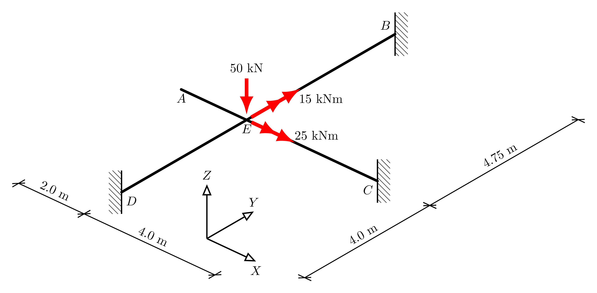
Taking node \(E\) as the origin of the coordinate system, using user-friendly labels, we define the nodes then as:
[4]:
grid.add_node("A", -2.0, 0.0)
grid.add_node("B", 0.0, 4.75)
grid.add_node("C", 4.0, 0.0)
grid.add_node("D", 0.0, -4.0)
grid.add_node("E", 0.0, 0.0);
And similarly, for the members, we set the flexural and torsional rigidities and add members connecting the relevant nodes, using the nice labelling.
[5]:
EI = 10e3 # kNm2
GJ = 5e3
grid.add_member("A", "E", EI, GJ)
grid.add_member("B", "E", EI, GJ)
grid.add_member("C", "E", EI, GJ)
grid.add_member("D", "E", EI, GJ);
The loads are added similarly, using intuitive arguments:
[6]:
grid.add_load("E", Fz=-90, Mx=30, My=60)
And supports are defined by adding a pre-defined support type to a node.
[7]:
grid.add_support("B", ospg.Support.FIXED)
grid.add_support("C", ospg.Support.FIXED)
grid.add_support("D", ospg.Support.FIXED)
And now we can run the analysis:
[8]:
ops = grid.analyze()
And extract all of the displacements for a node:
[9]:
dE = grid.get_displacement("E")
print(dE)
[0.0, 0.0, -0.01910652891244266, 0.00046566509286755174, -0.0009469098824023108, 0.0]
We can also get the reactions at a node, and here we get just one we are interested in (vertical force reaction):
[10]:
rB = grid.get_reactions("B", dof=3)
print(rB)
20.155184539095416
Finally, we can plot the results, providing scale factors in the order deformation (0 means use auto-scaling), bending, shear, torsion:
[11]:
grid.plot_results();
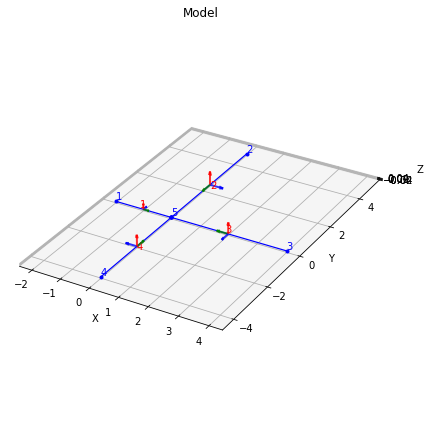
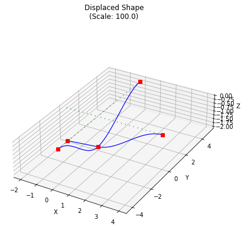
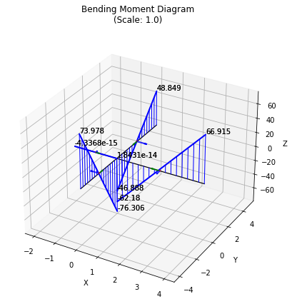
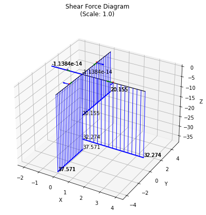
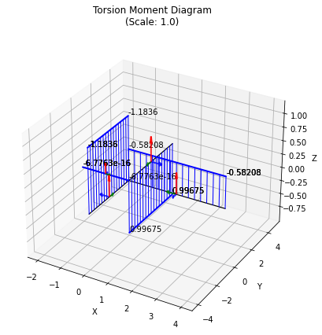
Example 2#
This example is based on the Semester 1 2020 Exam question for the same class as Example 1.
We consider the following grid, taking the following for all members:
\(EI = 30\times10^3\) kNm2
\(GJ = 5\times 10^3\) kNm2
[12]:
display.Image("./images/intro_ex_2.png",width=800)
[12]:
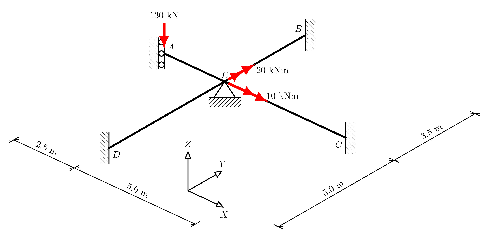
Make a new grid object
[13]:
grid = ospg.Grid()
As before, taking node \(E\) as the origin of the coordinate system, the nodes are defined as:
[14]:
grid.add_node("A", -2.5, 0.0)
grid.add_node("B", 0.0, 3.5)
grid.add_node("C", 5.0, 0.0)
grid.add_node("D", 0.0, -5.0)
grid.add_node("E", 0.0, 0.0);
And similarly, for the members, we set the flexural and torsional rigidities and add members connecting the relevant nodes, using the nice labelling.
[15]:
EI = 30e3 # kNm2
GJ = 5e3
grid.add_member("A", "E", EI, GJ)
grid.add_member("B", "E", EI, GJ)
grid.add_member("C", "E", EI, GJ)
grid.add_member("D", "E", EI, GJ);
The loads are added similarly, using intuitive arguments in consistent units (kN and kNm):
[16]:
grid.add_load("A", Fz=-130)
grid.add_load("E", Mx=10, My=20)
Next, we can use single character short-cuts to define the supports, as follows:
“X” =
ospg.Support.PINNED_X“Y” =
ospg.Support.PINNED_Y“F” =
ospg.Support.FIXED“V” =
ospg.Support.FIXED_V_ROLLER“P” =
ospg.Support.PROP
Note that a PROP is different to a PINNED support as it only restrains translation in the \(z\)-axis. In contrast, a PINNED support also restrains the twist of the connecting member (hence PINNED_X and PINNED_Y).
[17]:
grid.add_support("A", "V")
grid.add_support("B", "F")
grid.add_support("C", "F")
grid.add_support("D", "F")
grid.add_support("E", "P")
And now we can run the analysis:
[18]:
ops = grid.analyze()
Finally, we can selectively plot the grid and bending moment diagram, changing some plotting parameters too, for example:
[19]:
grid.plot_grid(figsize=(6,6),axes_on=True);
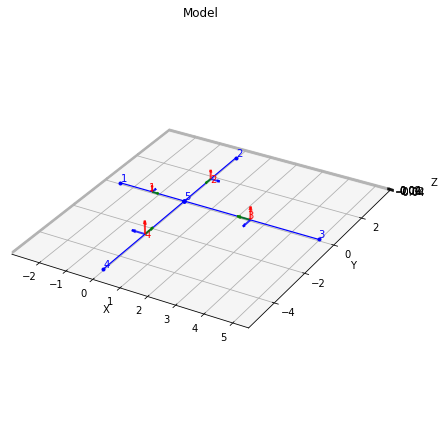
[20]:
grid.plot_bmd(figsize=(8,8),axes_on=False);
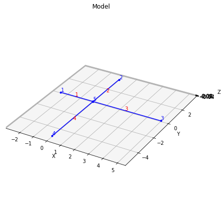
Example 3#
A utility function make_grid is included in ospgrid, which accepts a single string describing the grid. The string follows the grid specification described in the make_grid() documentation. It is useful for saving grid definitions, for example.
Here, we analyze the following grid:
[21]:
display.Image("./images/intro_ex_3.png",width=800)
[21]:
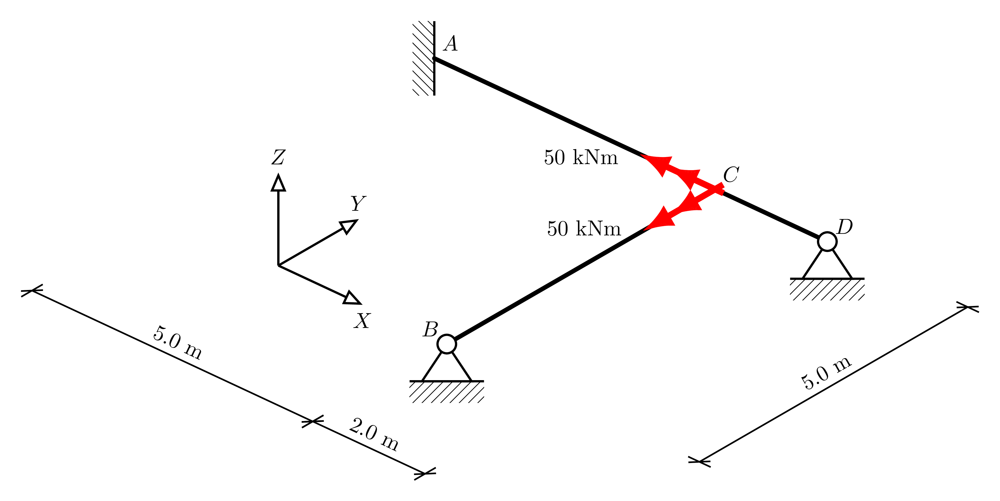
Following the grid specification, this grid is encoded as:
[22]:
grid_str = "AF-5:0,BX0:-5,CN0:0,DY2:0_C0:-50:-50_AC,CD,BC"
And we can make the grid using this string, and analyze as follows, while turing off the printed values in the diagrams:
[24]:
grid = ospg.make_grid(grid_str)
grid.analyze()
grid.plot_results(values=False)
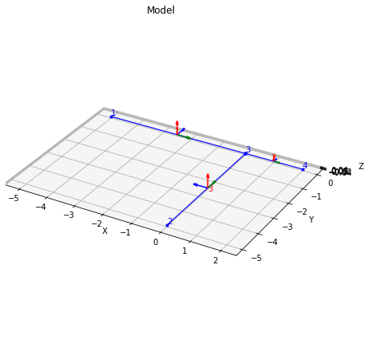
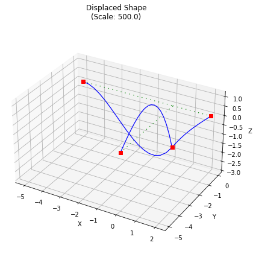
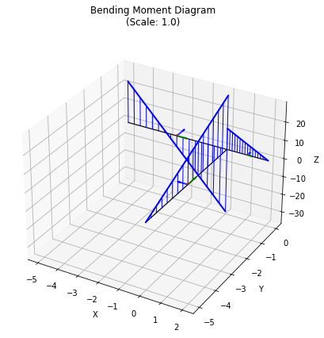
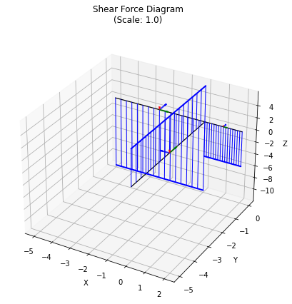
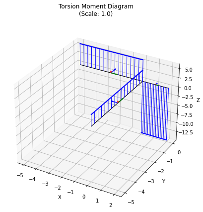